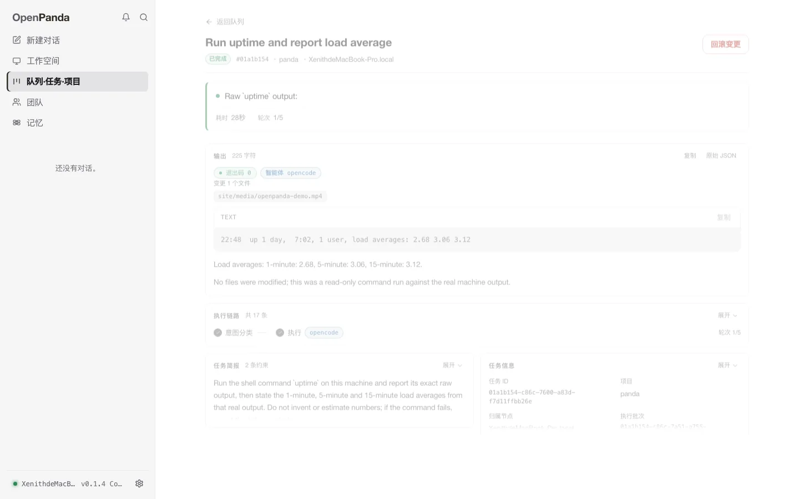

物理
写代码在笔记本，跑测试在构建机，通知走手机。模型再强，也变不出第二具身体。
OPENPANDA / LOCAL-FIRST ORCHESTRATION KERNEL
Make heterogeneous agents and devices work as one.
你只说一句话。理解、拆解、派活、盯完、验收，它全包。真正动手的，是你早就装好的 Claude Code、Codex，和桌上那几台机器。
curl -fsSL https://raw.githubusercontent.com/Xustalis/OpenPanda/main/scripts/install.sh | sh
不要求你换掉现有的 Agent
“把 issue #12 修了，在构建机上跑完测试，结果发我手机。”对人是日常，对单个 Agent 是物理上做不到的事。
写代码在笔记本，跑测试在构建机，通知走手机。模型再强，也变不出第二具身体。
二十条任务线挤在一个上下文里，注意力被稀释。多智能体首先是上下文隔离。
互相独立的分支串行排队，延迟直接相加。本该并行的三件事，被排成三步。
一个 Agent 崩了，任务就没了。没有另一个节点知道它做到了哪里。
问题从来不是“要不要多智能体”，而是“这些 Agent 之间怎么组织”。
一个 MainAgent 拆任务、派活、等汇报。它同时是调度器、消息总线和单点故障。
OpenPanda 把边还给节点。兄弟任务直接互发有界短消息，执行中的节点可以继续向下委派。没有固定中心——谁发起，谁就是中心。
“没有中心，不等于没有秩序。”
OpenPanda 本身不是 Agent。它理解意图、拆解任务、按能力卡路由到最合适的节点，监督执行、验收结果；真正动手的，是你已经装好的 Claude Code、Codex 和每一台设备。

FIG. 012026-11-06，本机从源码构建 v0.1.4 后的实机录制。panda ask 让模型在本机执行 uptime，任务 01a1b154 由 opencode 适配器在 43 秒内完成；控制台截图与终端视频来自同一次运行。完整录屏 · MP4 626 KB
先分清这是闲聊、查询，还是真要动手的事。只有第三种，才往下走。
一件事拆成几步，每步的产物交给下一步。怎么派，你不用管。
谁有那台机器、谁能跑那个工具，卡片上写着。按条件挑，不按顺序轮。
每一步都有裁判验收，不合格带因重派。不可逆的动作，会停下来等你点头。
编排框架冻结“怎么想”，模型一升级，脚手架就变成绳索；MCP / A2A 冻结“怎么说话”，标准层免费。OpenPanda 只冻结四类关系事实：身份、授权、边界、生命周期。
身份 · 授权 · 边界 · 生命周期
“AI 越强，项目越强——前提是只冻结关系。”
不是一堆功能，而是一组让节点可以彼此信任、交换工作、在断网后继续的机制。
多阶段工作展开为 DAG，产物在阶段之间接线；同机连续几步仍算一个任务，不拆成三个。
凭据失效就注入回退模型，节点失联就把任务迁走。重派只重跑失败那一步，不重跑整条链。
能力卡记着硬件、Agent 与执行器；硬条件先筛，匹配度再排，多跳路由只按下一跳计价。
同 plan / 同父任务的兄弟直接发短消息；槽位覆盖、三档粒度、每轮预算。
mesh / guarded / open 钉在 Ed25519 身份上；逐跳最弱钳制，屏幕内容只走 mesh。
DTN bundle 存储转发，链路恢复再送；可逆操作自动执行，不可逆操作挂起等人。
还有：双层记忆 · SKILL.md · 会话树 · Actuator / computer-use · MCP / RPC · 五种界面语言
macOS ↔ Windows ↔ Linux 开发板，真实组网：多跳委派、执行中杀节点、断线重连、消息重放。
KNOWN BOUNDARIES消息板真实多机互发待验 · 舵机 / 摄像头等硬件真机未点火 · 语音只验降级路径 · per-node 密钥分发待做
查看完整项目现状 →深空不是另一个赛道，是同一个问题的极限形态：节点异构、链路断续、彼此不完全信任。
笔记本 + 构建机 + 开发板。已实机验证。
多机器人、IoT、无人机。外设驱动 + 能力路由已有。
卫星星座、月背中继。DTN 协议已落地。
“早发射的卫星性能差但离得远，新发射的性能强但离得近——它们做的事不一样，但它们是同一个整体。”OpenPanda Vision
当前版本 v0.1.4 Constellation；上一支稳定版 v0.1.3 已由它接替。
跨节点委派、工作树随行、actuator 派发。
已发布会话 AEAD、蓝牙式配对、信任三档、多跳中继、computer-use。
稳定版发布级这条线的当前版本：跨网组网、同项目并行、审计收口、控制台一体化，加上原生方言、终端名册与任务级工作目录。
当前版本桌面薄壳（托盘常驻、全局热键、自更新）、稠密网格层、现状如实呈现。
计划中一键安装默认取最新稳定版（v0.1.4）；要装指定版本，安装脚本加 --version（Windows 用 -Version）。
代码是 AGPL-3.0-or-later。个人用、学习、公司内部工具，都不花钱。只有当你把它关进闭源产品里，才需要谈授权——这一条写在许可证里，不写在销售话术里。
¥0
个人使用、学习、公司内部工具、二次开发。
按需报价
把它变成你产品的一部分，而不必开源你的产品。
年度合约
授权之外，还要有人对交付负责。
拿不准自己的用法算不算「闭源分发」？写一句话描述场景，通常当天回复。
那些是编排框架，冻结的是「怎么想」——节点、边、状态机怎么写。OpenPanda 冻结的是关系事实：身份、授权、边界、生命周期。它不替你写 Agent，而是把你已经装好的 Agent 连成一张可路由、可监督、可验收的网。
不需要 GPU。路由、监督和验收都用你已经配置的模型提供方，本机模型或 API 都可以。守护进程空闲时常驻内存约 40MB，几乎不占 CPU。
不会，也没有「我们的服务器」。节点之间 P2P 直连，会话内容 AEAD 加密，并按信任三档逐跳钳制。断网时走 DTN 存储转发，链路恢复后再送。
六个发布目标：macOS、Linux、Windows × amd64 / arm64，另有 lite-linux 变体。目前 11 个适配器，包括 Claude Code、Codex、Antigravity、OpenCode、Grok Build、Hermes、OpenClaw、Pi、DeepSeek Harness、ZCode，以及一个可以接任意其他无头 CLI 的通用适配器。
v0.1.4「Constellation」是发布级这条线的当前版本（v0.1.0 起这条线进入发布级），可以日常用。单机、三台真机组网，以及 Mac → 中继 → 云主机的真实跨网多跳都跑通了（3 MiB 项目树哈希一致），自用、跑内部工具没问题，但还不建议直接对外托管。没做完的写在 status.md 里：UPnP/NAT-PMP 端口映射、punch 与目录帧的源签名收敛、daemon→面板 mesh 指标 IPC。逐条列出，不含糊。
提 Issue、开 PR 都欢迎。main 上有 10 项必过检查，PR 合并前会全部跑一遍。也可以先在 GitHub 上 Star，或者从 status.md 里列出的已知边界挑一条去复现。
v0.1.4 继续把内核做成发布级：CLI 加本地控制台已经可以日常用，配置、数据与协议向前兼容。桌面薄壳排在 v0.1.x 线上——托盘常驻、全局热键、原生通知、自更新，配上稠密网格层。
安装器会按平台与架构取产物，校验 SHA-256、解压并写进 PATH，装完跑一次 panda init 就绪。默认装最新稳定版；要指定版本，macOS / Linux 加 --version，Windows 加 -Version。
curl -fsSL https://raw.githubusercontent.com/Xustalis/OpenPanda/main/scripts/install.sh | sh
panda init初始化节点、模型提供方与能力卡。
panda进入交互式 TUI 控制台。
panda ask "check system status"一次性：回答、工具调用或派发。
文档、下载、发布记录、当前边界、能力清单、安全模型、社区与常见问题各有独立地址，可以直接收藏，也可以单独发给同事。
快速开始、命令速查、安装参数、架构与信任模型。
02 / DOWNLOAD六个发布目标、lite 变体、SHA-256 与 Ed25519 验签。
03 / RELEASE NOTES0.1.x 五个版本的逐条改动，以及版本兼容承诺。
04 / STATUS已验证的部署、未做完的边界与已知限制。
05 / CAPABILITIES编排、记忆、组网、会话与界面的逐条能力对账。
06 / SECURITY信任模型、部署红线、完整性校验与漏洞上报。
07 / COMMUNITY工具链、工程门禁、代码约定与 PR 流程。
08 / FAQ按场景分组的 29 个高频问题与答案。